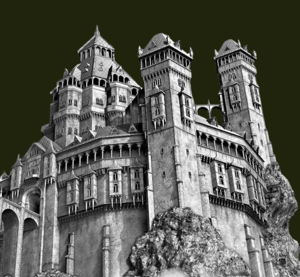
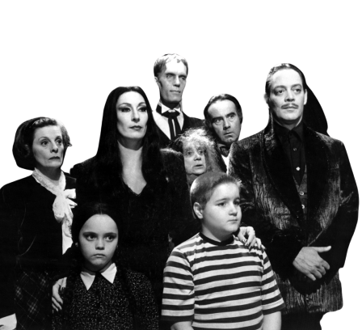

L'histoire
J'eus alors l'idée de réunir autour de moi les plus grands précepteurs afin d'enseigner toutes les subtilités de l'Art aux enfants jusque-là pourris-gâtés de la Grande Noblesse. Moi, je n'étais que fils puîné du Duc d'Aquitaine, et à sa mort j'ai hérité d'un palais d'été dont mon estimé frère n'avait pas l'usage, situé dans la commune sorcière de St Renaud-lès-Artois.
Fondée en période de guerre, la priorité était de la cacher aux Anglais, afin de préserver le savoir magique Français. Aussi, le château fut établi dans un col encaissé, au cœur même des Pyrénées, à proximité d'une source naturelle. Cependant, cela suffisait peut-être à se protéger des armées ennemies, majoritairement moldue, mais pas des sorciers.
Le directeur Ballessaim, un des plus grands illusionnistes de tous les temps, eut l'idée, à l'aide de ses pairs les plus prestigieux, et de l'expert en runes Jacquemin d'Éperonsang de mettre en place une dissimulation parfaite, cachant toute la vallée. Et c'est ainsi qu'est né le Mont Creux, une véritable montagne pour ceux qui la voient de l'extérieur, mais totalement invisible pour ceux qui se trouvent en dessous. La meilleure défense étant l'attaque, comme on le pensait à l'époque, les jeunes sorciers étaient formés au combat, incité à craindre le monde moldu comme celui-ci nous craignait.
L'Académie a ensuite connu une longue période de calme, jusqu'en 1789. Les nombreuses attaques contre les familles nobles affectèrent beaucoup les grande lignée sorcières, et les parents commencèrent à retirer leurs enfants de l'Académie, les envoyant dans les lointaines écoles, notamment à l'école de Salem, jouissant à l'époque d'une réputation sanglante pour qui osait s'en prendre aux sorciers.
Suite à cet évènement, le Tournoi des Trois Sorciers a été définitivement arrêté, après 498 ans d'existence. Le 14 septembre de la même année, un convoi de diligence qui menait des élèves de Paris à l'Académie est attaqué, et s'en suit un violent affrontement qui causera la mort de dizaines d'enfants sorciers, et de la totalité des agresseurs. Cependant, devant le danger encouru par les élèves, l'Académie décida de fermer ses portes.
Cette fermeture dura jusqu'à 1804, date à laquelle furent fondés les Ordres, et construit les Pavillons. Jusque-là, l'internat se situait dans les étages aujourd'hui appelés Pavillons de chasse. C'est aussi à cette époque qu'ont été créés les tunnels de Transportation. À l'époque, il n'y en avait qu'un, reliant un bâtiment secret situé dans Paris à l'Académie. En 1808 furent crées les diplômes de C.H.A.S.S.E, directement liés à la création de l'Université de Chevalier Lys, même si celle-ci a connu son véritable essor dans les années 1980, notamment avec l'arrivé à la direction de Beaux bâtons d'Olympe de Magie en 1982, menant à une refonte globale de l'éducation sorcière Française, et au regroupement des flux d'élèves par le Bourg Enchanteur. »